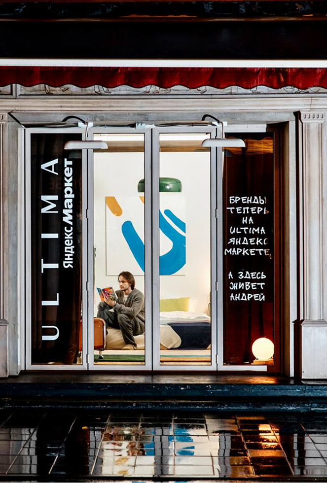

ЗАДАЧА
Поддержать запуск Ultima Яндекс Маркет и сделать новый сервис заметным в городе через нестандартную офлайн-активацию.
ЛИЧНОЕ ПОРТФОЛИО2026
CVRetail activation
Для поддержки запуска Ultima Яндекс Маркет заняли пустующие витрины в центре Москвы и превратили их в живой городской спецпроект: вместо товаров за стеклом появились рыбки, квартира Андрея и финальная вечеринка.


Поддержать запуск Ultima Яндекс Маркет и сделать новый сервис заметным в городе через нестандартную офлайн-активацию.
Бренды теперь на Ultima Яндекс Маркет — значит, в освободившихся витринах может происходить что угодно.
Две пустующие витрины превратили в живые сцены: в одной поселились рыбки, во второй — Андрей. История продолжилась в соцсетях и закончилась вечеринкой за стеклом.
Выбрали две пустующие витрины в центре Москвы: бывшего Cartier в Столешниковом переулке и витрину на Патриарших прудах.
Вместо товаров за стеклом появились живые сюжеты: аквариум с рыбками и квартира Андрея — героя проекта, за жизнью которого могли наблюдать прохожие.
Для Андрея придумали образ, интерьер и сценарий жизни в витрине. Обычная квартира за стеклом стала городским перформансом.
Проект неделю жил одновременно в городе и соцсетях Ultima: происходящее в витринах становилось контентом и постепенно вело к финальному событию.
В последний день квартира Андрея превратилась в закрытую вечеринку за стеклом. Попасть внутрь можно было через розыгрыш в соцсетях.


5 МЛН+суммарный охват в СМИ
200+публикаций о проекте
СЕРЕБРО
«Лучшее использование ambient-медиа»
БРОНЗА
«Лучшая нестандартная наружная и внутренняя реклама»


ОТКРЫТА К НОВЫМ ЗАДАЧАМ
И ИНТЕРЕСНЫМ БРИФАМ